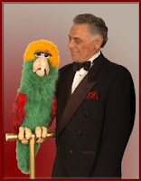

From Sammy King
3/11/2009
{kind=link}

Clinton,
Rumors of my demise were greatly exaggerated, but after 4 months in a coma, one year in various hospitals, and a lot of thearapy I am back on stage at the Palm Springs Flollies for the entire season. Truly a miracle, and I thank you for passing the word around.
After the upcoming convention, I'm going to retire to Colorado and enjoy my granddaughter. I'm still planning on coaching a few of my ongoing students, but my performing will be limited.
Hope to see you in Colorado.
Warmest regards,
Sammy King
Rumors of my demise were greatly exaggerated, but after 4 months in a coma, one year in various hospitals, and a lot of thearapy I am back on stage at the Palm Springs Flollies for the entire season. Truly a miracle, and I thank you for passing the word around.
After the upcoming convention, I'm going to retire to Colorado and enjoy my granddaughter. I'm still planning on coaching a few of my ongoing students, but my performing will be limited.
Hope to see you in Colorado.
Warmest regards,
Sammy King